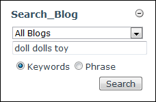

Searching Blogs
How to search one or all blogs for a phrase or key word using the Blog module.
- Go to the Search_Blog module.
- In the drop down list, select All Blogs to search all the blogs, or select a blog name to restrict the search to that blog.
- In the text box, enter one or more keywords (E.g. doll toy) or a phrase (E.g. rag doll). Note: Do not separate keywords by punctuation.
- Select either Keywords or Phrase.
- Click the Search button. This displays the search results in the Recent_Entries module which is titled Search Results.

- Click the Read More... link to read the post.

Search Results Display In The Recent_Entries module